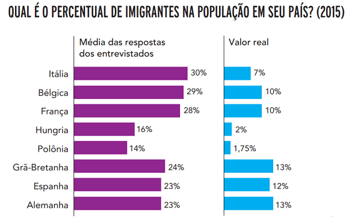
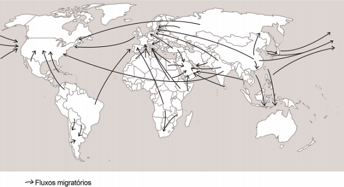
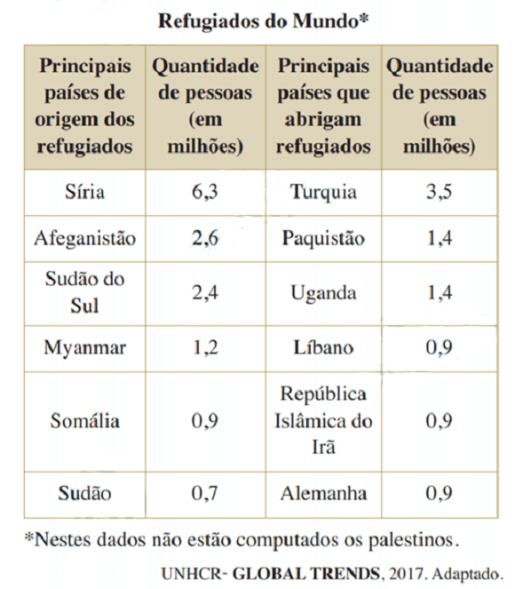
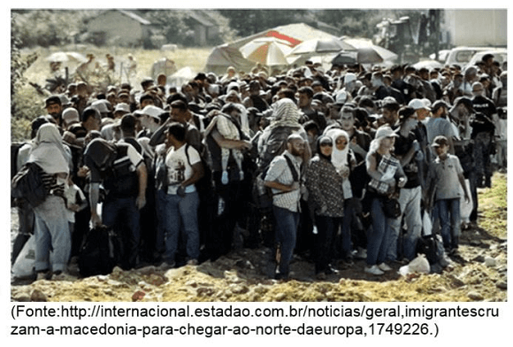
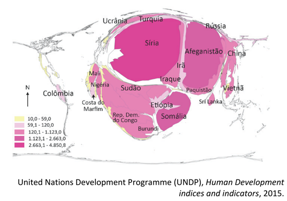

Conteúdo: Tipos de movimentos populacionais: voluntário, forçado e controlado; Imigrantes; Refugiados; Xenofobia.
Objetivo: Caracterizar e analisar os principais conceitos relativos aos fluxos de pessoas no mundo.
Questão 01
(UERJ 2020)

Os gráficos acima são parte do resultado de uma pesquisa feita em 2015 sobre a percepção dos cidadãos de diferentes países acerca do fenômeno migratório.
A diferença entre o percentual médio estimado pelos que responderam à pergunta e o percentual real de imigrantes em cada população nacional expressa uma grande preocupação de cidadãos europeus na atualidade.
Uma consequência direta dessa preocupação é:
a) ampliação dos programas de proteção social.
b) intensificação dos conflitos de caráter militar.
c) crescimento dos partidos de extrema-direita.
d) fortalecimento dos acordos de integração econômica.
Comentário:
O objetivo da questão é de transferir conhecimentos acerca da relação entre imigração e xenofobia para apontar consequência política advinda dessa relação.
As migrações laborais constituem, cada vez mais, um tópico extremamente relevante e sensível do debate político e social em muitos países do mundo. O gráfico apresentado demonstra o quanto a percepção dessa questão é magnificada em diversas nações, o que expõe uma distorção da realidade, que reflete o tamanho da preocupação de muitos cidadãos com o aumento de estrangeiros no território nacional. Essa preocupação se torna mais aguda em conjunturas marcadas por índice de desemprego elevado, degradação da assistência social e dívida pública ascendente.
Esse cenário favorece a aceitação, por uma parte do eleitorado, de discursos nacionalistas e xenofóbicos radicais, como aqueles proferidos por lideranças e partidos de extrema direita. Esse segmento político construiu um discurso dirigido à “solução” para as preocupações dessa parcela dos cidadãos nacionais incomodada com o suposto excesso de imigrantes, ainda que os imigrantes laborais e os refugiados não tenham a expressão numérica imaginada por muitos e, muito menos, sejam a causa estrutural dos problemas enfrentados por esses países.
Mesmo assim, o discurso simplista de que expulsá-los, visando garantir a nação para os “verdadeiramente” nacionais, tem se revelado uma estratégia política vitoriosa para partidos de extrema direita em muitos estados-nacionais, em especial no continente europeu.
Questão 02
(FMP 2020) Considere o texto sobre deslocamento populacional.
“A perseguição aos judeus e a outros grupos étnicos e religiosos, durante a Segunda Guerra Mundial, alertou o mundo para a necessidade de ampliar a proteção internacional às vítimas de perseguição e de estruturar um programa de asilo que envolvesse o maior número possível de países. Em meados dos anos 2010, o mundo conheceu o início de uma crise provocada pelo deslocamento geográfico de pessoas em dimensões globais. Trata-se da maior crise desta natureza desde a Segunda Guerra Mundial. Segundo dados da ONU, o número de pessoas deslocadas por guerras, perseguições de toda ordem e conflito, além daquelas que se deslocam devido a eventos ambientais extremos, atingia cerca de 60 milhões, considerando os que se deslocaram interna e externamente. Um dos maiores fluxos dessas pessoas passou a ocorrer do Oriente Médio e da África em direção à Europa”.
LUCCI, A. et al. Território e Sociedade no Mundo Globalizado. Ensino Médio, 3. São Paulo: Saraiva, 2017, p. 185. Adaptado
O deslocamento mencionado no texto refere-se à categoria demográfica especificamente denominada
a) imigrante.
b) refugiado.
c) transumante.
d) emigrante.
e) repatriado.
Questão 03
(PUC-RS 2019)

Os movimentos de deslocamento de populações é um tema central na pauta de discussões dos governos nacionais e das organizações internacionais como a ONU e a Comunidade Europeia. Em face das medidas tomadas pela maioria dos países desenvolvidos no intento de restringir a entrada de imigrantes, o tráfico destes tem se intensificado. No mapa acima, alguns dos movimentos migratórios são representados por setas, indicando as principais áreas e os países de saída e de destino. O processo de migração internacional pode ser desencadeado por diversos fatores, entre os quais pode-se citar: desastres ambientais; guerras; perseguições políticas, étnicas ou culturais; oportunidades de estudo e trabalho; melhores condições de vida.
A partir da observação do mapa e do texto acima, é possível afirmar:
I. Nas áreas do mapa onde o contraste de desenvolvimento econômico e social entre países vizinhos é acentuado, observam-se fluxos migratórios.
II. No mapa, constata-se que os fluxos migratórios regionais são mais frequentes que os intercontinentais.
III. Os fluxos sul-norte são predominantes e estão relacionados à dependência cultural, econômica e histórica dos países chamados subdesenvolvidos em relação aos países ditos desenvolvidos.
IV. A Europa Ocidental é o principal destino dos movimentos migratórios mundiais, seguido pelos fluxos para os EUA.
Estão corretas apenas as afirmativas
a) I e III.
b) II e IV.
c) I, III e IV.
d) II, III e IV.
Questão 04
(FUVEST 2019) A tabela mostra o número total de refugiados no mundo em 2017, segundo relatório do Alto Comissariado das Nações Unidas Para Refugiados (UNHCR ou ACNUR em português).

Sobre os refugiados e sua distribuição no mundo, é correto afirmar:
a) Os provenientes do Sudão do Sul e da Somália são acolhidos na Turquia, onde encontram oferta de empregos nas atividades comerciais, tradição econômica do país, desde o século XVII.
b) A maioria provém da África, devido aos processos de desertificação, e tem como destino o Oriente Médio e a Europa.
c) O Irã recebe majoritariamente refugiados de países da África Subsaariana, dentre os quais se destacam o Sudão e o Sudão do Sul
d) Os de origem síria são a maior população nesta condição, e estão sendo acolhidos em vários países do Extremo Oriente e da África, os quais apoiam o governo sírio na guerra civil que ocorre nesse país desde 2011.
e) São majoritariamente provenientes do Oriente Médio, África e Ásia, deslocam‐se, forçadamente, devido a longas guerras, em grande parte para países e/ou regiões fronteiriços
Nas regiões apresentadas como aquelas de origem dos grupos emigrantes – Oriente Médio, África e Ásia –, há países como Síria, Afeganistão e Sudão do Sul, que se encontram em sérias crises políticas, alguns envolvidos em guerras civis, o que força sua população a se retirar desesperadamente. O caminho mais fácil é se transferir para países vizinhos, em função da proximidade, deixando os países mais distantes como último recurso.
a) Incorreta. Os refugiados do Sudão do Sul e da Somália se refugiam em Uganda (com destaque na segunda parte da tabela como país que abriga refugiados e elogiado em relatórios da ONU pela política de acolhimento) ou tentam uma arriscada jornada até a Europa, para países mais desenvolvidos como Alemanha e França. Uma observação importante é a dificuldade para os refugiados arrumarem emprego nos países que chegam.
b) Incorreta. A maioria provém do Oriente Médio, com destaque para Síria e Afeganistão, e o destino são países vizinhos pobres, como Uganda e Paquistão, e países da Europa, como Turquia e Alemanha.
c) Incorreta. O Irã recebe majoritariamente refugiados afegãos (inclusive o país também foi elogiado pela ONU pela política de acolhimento dos refugiados), e não da África Subsaariana.
d) Incorreta. Os refugiados sírios se dirigem especialmente para a Europa, com destaque para Turquia e Alemanha, e não países do Extremo Oriente e da África. Vale lembrar as dificuldades de acolhimento desses refugiados na maioria dos países e que grande parte dos países dessas regiões não apoia o governo sírio.
e) Correta. Os principais países de origem dos refugiados estão no Oriente Médio (Síria e Afeganistão), África (Sudão do Sul, Somália e Sudão) e Ásia (Síria, Afeganistão e Myanmar). São migrações forçadas por guerras e, na maioria dos casos, refugiam-se em países fronteiriços.
Questão 05
(ENEM 2016)
“Dados recentes mostram que muitos são os países periféricos que dependem dos recursos enviados pelos imigrantes que estão nos países centrais. Grande parte dos países da América Latina, por exemplo, depende hoje das remessas de seus imigrantes. Para se ter uma ideia mais concreta, recentes dados divulgados pela ONU revelaram que somente os indianos recebem 10 bilhões de dólares de seus compatriotas no exterior. No México, segundo maior volume de divisas, esse valor chega a 9,9 bilhões de dólares e nas Filipinas, o terceiro, a 8,4 bilhões”.
HAESBAERT. R.; PORTO-GONÇALVES, C. W. A nova desordem mundial. São Paulo: Edunesp, 2006.
Um aspecto do mundo globalizado que facilitou a ocorrência do processo descrito, na transição do século XX para o século XXI, foi o(a)
a) integração de culturas distintas.
b) avanço técnico das comunicações.
c) quebra de barreiras alfandegárias.
d) flexibilização de regras trabalhistas.
e) desconcentração espacial da produção.
A globalização facilitou o acesso às comunicações, aos transportes e às informações, o que estimulou muitos imigrantes de países periféricos a buscar melhores oportunidades de vida e emprego em países centrais.
Como consequência disso, eles enviam remessas aos seus familiares.
a) Incorreta. O texto apresentado não trata da questão cultural mas sim dos “recursos enviados pelos imigrantes estão nos países culturais”, Além disso, a integração cultural não é uma realidade em muitos lugares no mundo atual.
b) Correta. As crescentes inovações e melhorias relacionadas aos sistemas de comunicação propiciaram maior facilidade de acesso às informações e instantaneidade das relações à distância, sobretudo por meio da internet. O desenvolvimento do uso da rede mundial possibilitou maior fluxo de informações e também das remessas financeiras que retornam aos países de origem dos imigrantes.
c) Incorreta. Embora as dinâmicas globalizantes do capitalismo atual tenham enfraquecido as barreiras comerciais entre os países, vale lembrar que há aplicação de taxas e impostos sobre circulação de mercadorias e transações financeiras, aspectos inerentes à atuação econômica dos Estados-nação e até de instituições financeiras privadas. Tal realidade, portanto, não facilitaria o envio de grandes quantias de dinheiro em âmbito internacional.
d) Incorreta. Há atualmente maior flexibilização das leis trabalhistas a fim de favorecer a ação das grandes corporações transnacionais na economia global, porém tal realidade não explica a facilidade da circulação do capital (investimentos, financiamentos, remessas de dinheiro privado) apontada no texto.
e) Incorreta. A descentralização produtiva, ou seja, a intensificação da presença de empresas globais em diversas regiões do mundo é uma característica do mundo globalizado, mas isso não possui relação direta com o retorno dos ganhos de trabalhadores imigrantes ao seu país de origem, uma vez que é necessário um elemento técnico para tornar mais fácil a dimensão apresentada no texto.
Questão 06
(UNICAMP 2016) Imigrantes cruzam a Macedônia para chegar ao Norte da Europa.

Indique a afirmação correta a respeito dos grandes fluxos migratórios atuais no contexto da globalização.
a) envolvem imigrantes da América Latina, do norte da África e do Oriente Médio, atraídos pela industrialização fordista da Europa e dos Estados Unidos, que gera trabalho nas fábricas e na construção civil.
b) direcionam-se para os países ricos ou em crescimento econômico e envolvem aquelas áreas de expulsão, cujas populações de origem sempre tiveram culturalmente vocação para a realização de grandes deslocamentos.
c) Resultam das diferenças entre a situação econômica dos países pobres e ricos e se direcionam para os lugares em que as populações falam a mesma língua ou possuem proximidades culturais.
d) assumem distintas direções, sendo que uma das rotas dos imigrantes para a Europa inicia-se em países do Oriente Médio e da costa oriental do norte da África, indo até a Grécia, com travessia pelo mar Mediterrâneo.
A alternativa d está correta porque afirma que os grandes fluxos migratórios atuais no contexto da globalização estão associados a pessoas que se deslocam de distintos lugares e em diversas direções. E que os imigrantes que chegam à Europa procedentes do Oriente Médio e da costa oriental do norte da África atravessam o Mar Mediterrâneo, desembarcando especialmente no sul da Grécia.
A alternativa a está errada porque os atuais fluxos migratórios da América Latina, do norte da África e do Oriente Médio que se deslocam para os Estados Unidos ou para a Europa não são compostos de pessoas que vão trabalhar na industrialização fordista - essa fase da industrialização ocorreu especialmente no final do século XIX e na primeira metade do século XX nos países ditos industrializados.
A alternativa b está errada: os fluxos migratórios internacionais para os países ricos não ocorrem porque a população de onde se origina o fluxo tem vocação cultural para a migração, mas resultam de condições econômicas adversas que obrigam determinados grupos sociais a buscarem novas oportunidades de ocupação em outros países.
A alternativa c está incorreta: os fluxos migratórios entre os países não ocorrem porque esses países têm proximidade cultural ou falam a mesma língua. Os deslocamentos espaciais da população estão associados, frequentemente, a questões econômicas e se direcionam de países em condições econômicas mais debilitadas para aqueles com melhores condições de emprego, independentemente do fato de apresentarem ou não semelhanças linguísticas ou culturais.
Questão 07
(FUVEST 2015) um tema recorrente no debate contemporâneo é a migração global. A Organização das Nações Unidas estima que existam 232 milhões de migrantes em todo o mundo (ONU, 2013). Há, atualmente, mais mobilidade que em qualquer outra época da história mundial. Comparando a migração atual com a do século XIX, é correto afirmar:
a) até o século XIX, as nações norte-americanas destacaram-se como emissoras de migrantes, enquanto, hoje em dia, encontram-se entre as principais receptoras desses fluxos, sobretudo os originários do continente africano.
b) Diferentemente do que ocorreu no século XIX, os recursos envolvidos são um traço diferenciador na atualidade, pois remessas enviadas por migrantes originários de nações pobres, como Haiti e Jamaica, são, muitas vezes, utilizadas para sustentar suas famílias no país de origem, além de representarem parte significativa do PIB desses países.
c) Países europeus, como Irlanda, Itália, Grécia e Espanha, foram importantes emissores de migrantes no século XIX e continuam a figurar, hoje em dia, dentre os países com maior fluxo migratório para os EUA.
d) no século XIX, a emissão e a recepção de migrantes concentravam-se na Europa, enquanto, na atualidade, a emissão restringe-se à América do Sul e a recepção tem alcance global.
e) O movimento migratório do continente africano para a Ásia foi significativo no século XIX e, atualmente, apresenta importante crescimento decorrente de políticas de cooperação internacional (Ásia/África) para o desenvolvimento socioeconômico africano, especialmente para Angola e África do Sul.
A nova ordem internacional e as diferenças existentes entre as nações ricas e as pobres impuseram uma maior mobilidade populacional, comparativamente a outras épocas históricas.
Na atualidade, observam-se traços diferenciadores e distintos daqueles verificados no século XX, evidenciando-se países centro-americanos pobres, como Haiti e Jamaica, cujos migrantes, muitas vezes, enviam os valores auferidos para complementar ou contribuir para uma melhor qualidade de vida de seus familiares nos países de origem.
a) Incorreta. Até o século XIX, as nações norte-americanas destacaram-se como receptoras de grandes fluxos de migração como, por exemplo, ingleses e irlandeses nos EUA, ingleses e franceses no Canadá e espanhóis no México. Atualmente os grandes fluxos do continente africano dirigem-se para a Europa, e não para a América do Norte.
b) Correta. Atualmente a possibilidade de envio de recursos dos migrantes para as famílias em países pobres, graças ao desenvolvimento dos meios de comunicação, representa grande fatia do PIB desses países. No século XIX esse envio era pouco significativo e as famílias, na maioria das vezes, migravam inteira para a construção de uma nova vida.
c) Incorreta. Países europeus foram importantes emissores de migrantes no século XIX para os EUA, porém atualmente os maiores grupos migrantes para os EUA são latinos (55%) e asiáticos (26%).
d) Incorreta. No século XIX a Europa destacava-se como importante área emissora, transformando-se em importante área receptora na segunda metade do século XX. Na atualidade, países pobres, não só da América do Sul, mas também da América Latina, África e Ásia, são importantes áreas emissoras, enquanto áreas receptoras se concentram nos países ricos e emergentes do planeta.
e) Incorreta. O movimento migratório da África para a Ásia não foi significativo no século XIX e atualmente também não representa grande parcela dos fluxos, uma vez que os africanos mais pobres buscam principalmente condições de vida melhores na Europa. Angola a África do Sul não recebem atualmente grandes fluxos migratórios asiáticos, e sim de seus países vizinhos mais pobres.
Questão 08
(ENEM 2011)
“As migrações tradicionais, intensificadas e generalizadas nas últimas décadas do século XX, expressam aspectos particularmente importantes da problemática racial, visto como dilema também mundial. Deslocam-se indivíduos, famílias e coletividades para lugares próximos e distantes, envolvendo mudanças mais ou menos drásticas nas condições de vida e trabalho, em padrões e valores socioculturais. Deslocam-se para sociedades semelhantes ou radicalmente distintas, algumas vezes compreendendo culturas ou mesmo civilizações totalmente diversas”.
IANNI, O. A era do globalismo. Rio de Janeiro: Civilização Brasileira, 1996.
A mobilidade populacional da segunda metade do século XX teve um papel importante na formação social e econômica de diversos estados nacionais. Uma razão para os movimentos migratórios nas últimas décadas e uma política migratória atual dos países desenvolvidos são:
a) a busca de oportunidades de trabalho e o aumento de barreiras contra a imigração.
b) a necessidade de qualificação profissional e a abertura das fronteiras para os imigrantes.
c) o desenvolvimento de projetos de pesquisa e o acautelamento dos bens dos imigrantes.
d) a expansão da fronteira agrícola e a expulsão dos imigrantes qualificados.
e) a fuga decorrente de conflitos políticos e o fortalecimento de políticas sociais.
As migrações são intensificadas nos momentos de crises econômicas, em que grandes massas populacionais buscam melhores condições de vida, emprego, etc. Contudo, esses movimentos também aumentam a xenofobia no país receptor, obrigando os governantes a criarem barreiras para dificultar a entrada de imigrantes.
Questão 09
(UFG-GO 2009) Um dos principais traços da dinâmica demográfica mundial é a migração internacional, que recria conflitos espaciais de diferentes ordens. Esse tipo de migração é explicado
a) pela incorporação de valores ocidentais no Oriente e de valores orientais no Ocidente, diminuindo as fronteiras simbólicas.
b) pela facilidade do fluxo de trabalhadores condicionados pelos novos meios de comunicação e transportes.
c) pela aprendizagem de idiomas dos países ricos como forma de incorporação às novas demandas da indústria.
d) pelo livre acesso dos indivíduos no interior dos países signatários de acordos de livre comércio e cooperação.
e) pelo aumento global do desemprego, que gera miséria nas nações de baixo índice de desenvolvimento humano.
Questão 10
(FUVEST 2023)
“Em um mapa produzido com a técnica da anamorfose geográfica, cada país é redesenhado de forma que seu polígono tenha uma deformação proporcional a um tema de interesse. Com essa técnica, é possível visualizá-lo de uma forma mais direta e clara”.
Disponível em https://educa.ibge.gov.br/. Adaptado.
Observe o mapa com dados de 2015:

Os dados representados no mapa são condizentes com:
Ao analisar o mapa e observar os países destacados, como Síria, Afeganistão, Iraque e Sudão, é possível descartar algumas alternativas e se aproximar da resposta correta como a relação direta entre taxas de natalidade excepcionalmente altas. Também não são países que possuam alto nível de Produto Interno Bruto (PIB). Essa alternativa também pode ser descartada. Igualmente não são os países mais urbanizados do mundo e nem mesmo os maiores produtores de petróleo. Tente resolver sem ver a resposta
Resposta: Letra E. Refugiados conforme o país de origem.
a) Número de nascimentos vivos.
b) Produto Interno Bruto.
c) Total de população urbana.
d) Produção de petróleo.
e) Refugiados conforme o país de origem.
a) Incorreta. Os países com maiores taxas de natalidade ou número de nascimentos vivos tendem a ser países africanos, como Níger, Mali, Uganda e Zâmbia, devido a fatores como altas taxas de fertilidade e falta de acesso a métodos contraceptivos.
b) Incorreta. Para Produto Interno Bruto (PIB): Países com economias mais desenvolvidas, como Estados Unidos, China, Japão e Alemanha, poderiam ser destacados, pois geralmente apresentam os maiores PIBs do mundo devido ao tamanho de suas economias e diversidade de setores produtivos.
c) Incorreta. Para Total de População Urbana: Países com alta urbanização, como Qatar, Singapura, Malta, Bélgica, poderiam ser ampliados, pois possuem grandes populações urbanas em centros urbanos densamente povoados.
d) Incorreta. Para Produção de Petróleo: Países com grandes reservas de petróleo, como Arábia Saudita, Estados Unidos, Rússia e Canadá, poderiam ser ampliados, já que são os principais produtores e exportadores de petróleo do mundo, exercendo grande influência no mercado global de energia.
e) Correta. A representação de refugiados conforme o país de origem seria condizente com o destaque de países como Síria, Afeganistão, Iraque e Sudão, que são algumas das principais nações de origem de refugiados devido a conflitos armados, perseguições políticas e violações dos direitos humanos em seus territórios. A anamorfose geográfica poderia ser utilizada para ressaltar visualmente a magnitude do deslocamento humano e a distribuição desigual de refugiados pelo mundo.